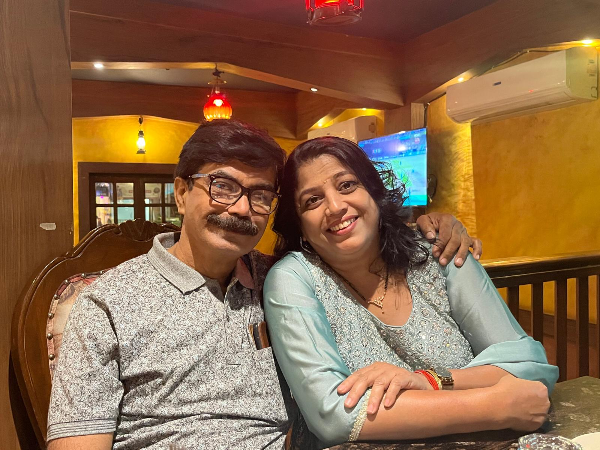
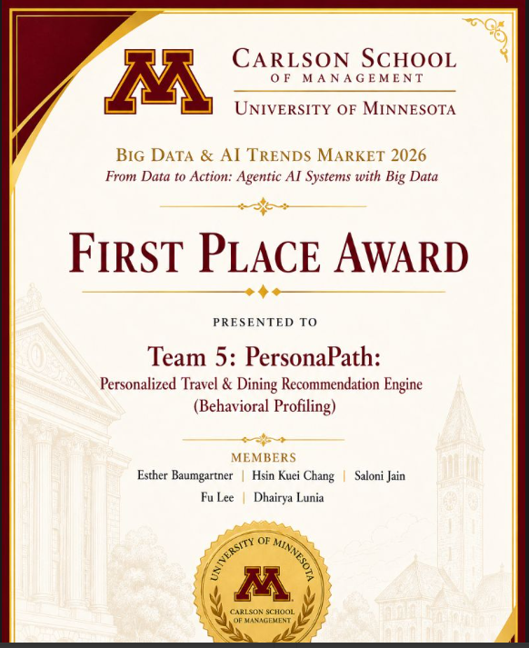

Analytics Student Consultant
Carlson Analytics Lab
Partnered on client-facing analytics work, presentations, and problem solving with a practical consulting lens.
Business Analyst | Data Analyst | Storyteller
I love finding the story inside the numbers, shaping insights into action, and bringing a thoughtful, people-first lens to every problem I solve.
When I'm not deep in data, I'm probably with Bella and Coco.



About Me
I partner with people across functions to uncover what truly matters, challenge assumptions, and turn ideas into practical recommendations that drive impact.
Whether I am diving into data, facilitating conversations, or sharing a story, I believe the best solutions are built together with empathy, rigor, and curiosity at the core.

Experience
I enjoy roles where analysis, communication, and thoughtful execution all matter.
Carlson Analytics Lab
Partnered on client-facing analytics work, presentations, and problem solving with a practical consulting lens.
FSCN 1011, Science of Food & Cooking
Supported labs, guided students, and helped bring classroom learning to life with structure, clarity, and care.
Technocrat Solutions
Built SQL reporting, Power BI dashboards, and compliance insights for financial institutions, turning detail-heavy data into sharper decisions.
SP Jain Institute of Management & Research
Worked on sustainability communication research using NLP, text analytics, and structured storytelling across BSE-100 firms.
Selected Work
Each section tells a different part of the story: what I built, how I competed, and where I pushed ideas further.
AI Product
An Airbnb pricing intelligence product built with Spark, Databricks, Streamlit, and a multi-agent workflow.
View GitHub ↗Trade Operations
A multilingual document intelligence product designed to make cross-border workflows faster and easier to navigate.
View GitHub ↗Healthcare Analytics
A study of care intensity, visit frequency, and the spending patterns that shape healthcare costs.
Read Portfolio ↗
First Place
Recognized for a data product that balanced technical depth, storytelling, and practical business value.

Runner-Up
Built a confidence scoring framework across 10,800+ trips to surface vendor reliability risks.

Hackathon
Modeled a sustainability framework for corporate travel and designed AI-enabled behavioral nudges.

Hack-o-Hire
Designed an NLP-driven support-routing concept paired with operational dashboards.
NLP and Sustainability
Analyzed BSE-100 company disclosures and CSR communication using text analytics and structured validation.
Medical AI
A multimodal deep learning framework for age-related macular degeneration detection.
Deep Learning
A peer-reviewed study applying deep learning to multi-class medical image classification.
Patent
A dual-authentication contactless attendance system using computer vision.
Credentials
SQL, Python, R, SAS, Excel, Power BI, Tableau, Spark, Databricks, and applied AI.
SQL, Python, R, SAS, Excel, Power BI, Tableau
Spark, Databricks, Scikit-learn, TensorFlow, LangGraph
Problem framing, stakeholder alignment, insight synthesis, and executive storytelling